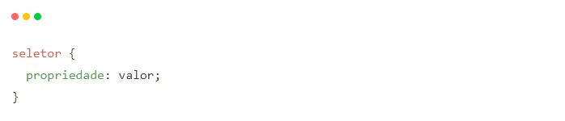
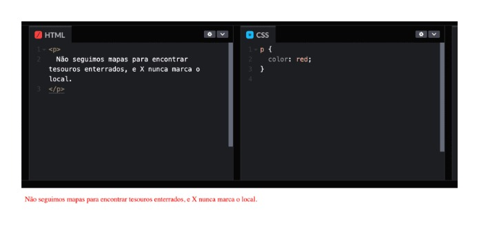
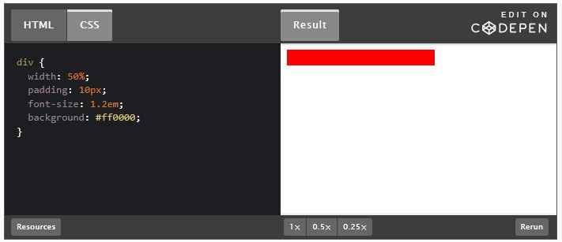

Olá, pessoa incrível! Hoje vamos abordar um tema que considero fundamental para qualquer pessoa que esteja na área de desenvolvimento web, ou até mesmo para aquelas que estão pensando em entrar nesse maravilhoso mundo. Vamos falar de CSS — Cascading Style Sheets. Prepare-se para mergulhar nessa aventura!
Olá, pessoa incrível! Hoje vamos embarcar em uma aventura empolgante inspirada na lendária personagem Indiana Jones! Imagine que você é uma pessoa arqueóloga apaixonada por descobertas históricas e tesouros antigos. Assim como Indiana Jones, você está em busca de conhecimento e aventuras emocionantes. No entanto, em vez de explorar templos e ruínas antigas, a sua missão é desvendar os segredos do CSS (Cascading Style Sheets) — e dominar essa linguagem poderosa.
Assim como Indiana Jones enfrentava obstáculos desafiadores em suas expedições, você também enfrenta dificuldades em dominar o CSS. Você sabe que o CSS é essencial para criar belos e atraentes sites, mas sente-se perdido no meio de seletores, propriedades e valores. Você precisa desvendar esses mistérios e encontrar uma forma de aplicar corretamente o CSS em seus projetos.
Nesta jornada cheia de emoção e aventura, vamos seguir os passos de Indiana Jones e explorar os segredos ocultos do CSS. Assim como ele usava sua inteligência, habilidades, e ferramentas para superar desafios, decifrar hieróglifos e símbolos enigmáticos, você aprenderá sobre seletores, regras de estilo e blocos de declaração, vou te dar um gostinho, vamos a um exemplo:
Veja que temos o seletor, que define a qual elemento HTML o estilo será aplicado, seguido por um bloco de declarações (dentro das chaves {}). Dentro desse bloco, temos a propriedade que queremos alterar e o valor dessa propriedade. Simples, não é mesmo?
Vamos agora a um exemplo prático:
Neste caso, o p é o seletor, que neste caso se refere a todos os parágrafos (< p >) do nosso documento. A propriedade que estamos modificando é a color e o valor dessa propriedade é red (vermelho). Portanto, com essa regra de estilo, estamos fazendo com que todos os parágrafos do nosso documento sejam exibidos na cor vermelha.
O CSS permitirá que você controle a aparência e o estilo dos elementos de um site, assim como Indiana Jones desvendava enigmas e encontrava tesouros valiosos. Prepare-se para embarcar nessa aventura empolgante e descobrir os segredos do CSS! Não perca os próximos capítulos no universo do CSS!
Da mesma maneira que Indiana Jones precisa de seu chicote para se aventurar pelas cavernas escuras e resolver enigmas, nós, desenvolvedores web, precisamos do CSS para criar sites atraentes e funcionais. Por quê? Vamos explorar juntos.
Sem o CSS, nossos sites seriam como um mapa sem legendas — tecnicamente útil, mas incrivelmente difícil de entender. Um bom design não é apenas sobre tornar um site bonito, mas também melhorar a experiência do usuário. O CSS nos permite fazer isso, proporcionando uma experiência de usuário suave e agradável.
Você se lembra daquela cena em "Indiana Jones e a Última Cruzada" em que Indy escolhe o cálice certo entre tantos outros brilhantes, mas enganosos? Pois bem, o CSS é esse cálice humilde, mas valioso que torna tudo possível. Pode não ter o brilho imediato de outras tecnologias, mas sem ele, nossos sites seriam muito menos atraentes e eficazes.
Além disso, o CSS é essencial para a criação de sites responsivos. Com o aumento do uso de dispositivos móveis para acessar a web, é cada vez mais importante que nossos sites se adaptem a diferentes tamanhos de tela. Com o CSS, podemos garantir que nossos sites sejam tão bonitos e funcionais em um smartphone quanto em um desktop.
Por último, mas não menos importante, o CSS tem um papel crucial na acessibilidade na web. Ele nos permite criar sites que são acessíveis a todas as pessoas, independentemente de suas habilidades ou das tecnologias assistivas que possam estar usando.
Portanto, a importância do CSS no desenvolvimento web é indiscutível. Ele é a ponte de corda que nos permite cruzar o precipício do design funcional, a chave que nos ajuda a decifrar o enigma da experiência do usuário. Como Indy, devemos valorizar essa ferramenta e aproveitar ao máximo o seu potencial.
O CSS oferece uma variedade de vantagens que podem transformar a aparência e o funcionamento dos sites. Com o CSS, é possível:
Com o CSS, você tem controle total sobre o visual do site. É possível definir cores, fontes, espaçamentos e muito mais, permitindo uma personalização completa para atender às suas preferências.
O CSS permite escrever regras que podem ser aplicadas em vários elementos do site, evitando a repetição de estilos específicos. Isso resulta em menos código para escrever e manter, tornando o processo mais eficiente.
Com as media queries do CSS, é possível adaptar o design do site de acordo com as características do dispositivo do usuário. Isso garante que o site seja visualmente atraente e funcional em diferentes tamanhos de tela, como smartphones, tablets e computadores.
O CSS desempenha um papel importante na criação de sites acessíveis. É possível ajustar o contraste das cores, o tamanho das fontes e outras características visuais para tornar o site mais acessível para usuários com deficiências visuais ou outras necessidades especiais.
Separar o design (CSS) do conteúdo (HTML) torna a manutenção do site mais fácil. Alterações no design podem ser feitas sem afetar o código HTML, simplificando o processo de manutenção e reduzindo a possibilidade de erros.
Assim como Indiana Jones desvendava segredos e encontrava tesouros valiosos, o CSS é uma ferramenta essencial para desvendar o potencial visual e funcional dos sites. Aproveite todas as vantagens do CSS e transforme suas criações web em verdadeiras jóias da internet!
Se a Web fosse uma grande aventura, o CSS seria nosso mapa. E, para navegar nesse mapa, precisamos entender a sua estrutura e a sua sintaxe. Afinal, você não quer se perder em um labirinto de código, não é mesmo?
Vamos começar pelo básico. Uma regra CSS é composta por:
O seletor indica a quem a regra se aplica, e o bloco de declaração contém uma ou mais declarações que são aplicadas ao elemento selecionado.
Uma declaração, por sua vez, é composta por uma propriedade e um valor, separados por dois pontos. Ficaria assim:
Bem simples, né? Agora vamos olhar mais de perto para cada parte desta regra.
Os seletores são como os nossos detetives. Eles vão à procura dos elementos que correspondem ao padrão que definimos. Existem vários tipos de seletores em CSS, mas aqui estão alguns dos mais usados:
As propriedades são como os superpoderes dos elementos. Elas controlam tudo, desde a cor do texto até o tamanho da borda, passando pela fonte e o espaçamento. O CSS possui centenas de propriedades diferentes, o que proporciona um nível incrível de controle sobre a aparência de uma página web.
Cada propriedade tem um conjunto específico de valores que pode aceitar. Alguns são bastante simples, como auto ou none. Outros podem ser números, cores ou mesmo uma string de texto.
Muitos valores numéricos em CSS são acompanhados por uma unidade de medida. Por exemplo, você pode definir a largura de uma div em pixels (px), porcentagem (%), ems (em), ou várias outras unidades. Cada uma tem suas próprias características e usos.
Entender a estrutura e a sintaxe do CSS é como ter o mapa da mina em mãos. E agora que você já tem esse conhecimento, está mais que preparado para encontrar o tesouro que é criar estilos incríveis para a web.
fonte: https://www.alura.com.br/artigos/css